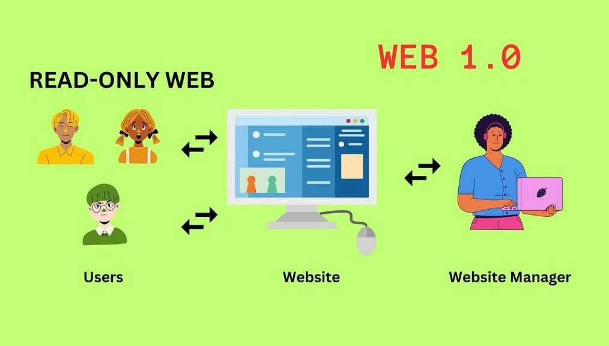

Web 1
- Web 1.0
- The first generation of the World Wide Web, characterized by static web pages and limited interactivity.
- Web 1.0 was primarily focused on providing information and content to users, with little user-generated content or social interaction.
- It was dominated by HTML and simple websites that were primarily read-only.
- Web 1.0 laid the foundation for the development of the internet and paved the way for future advancements in web technology.
